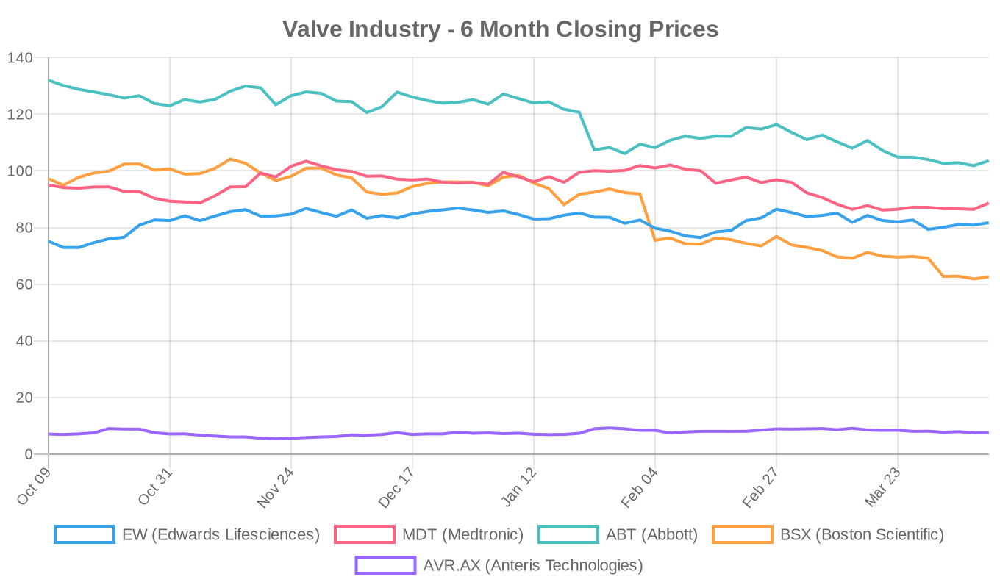
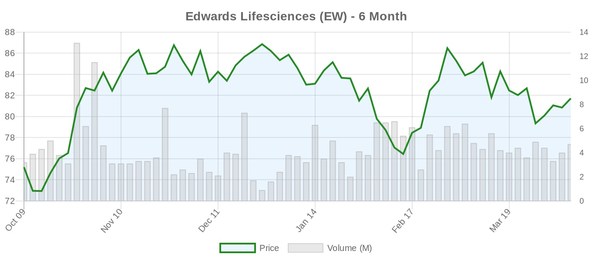
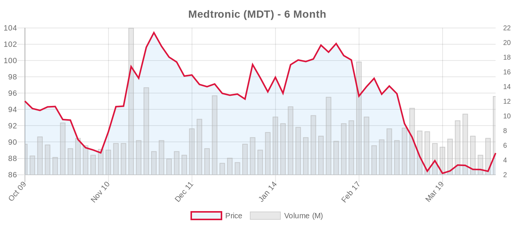
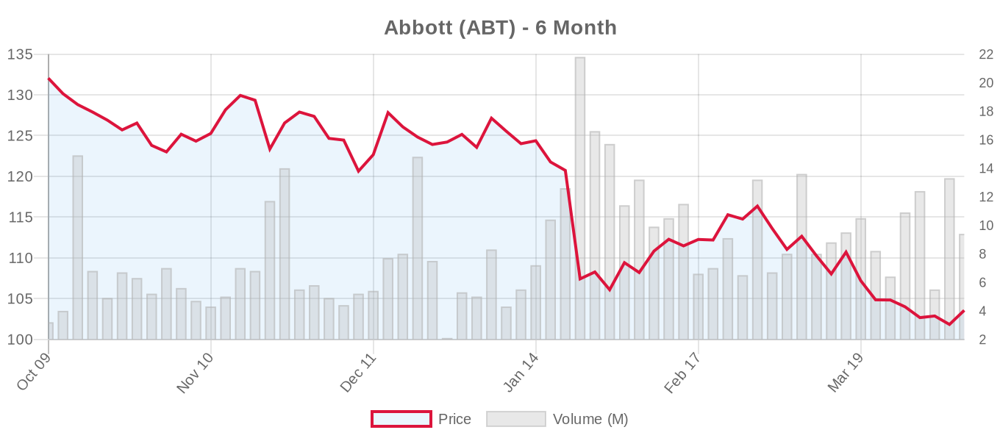
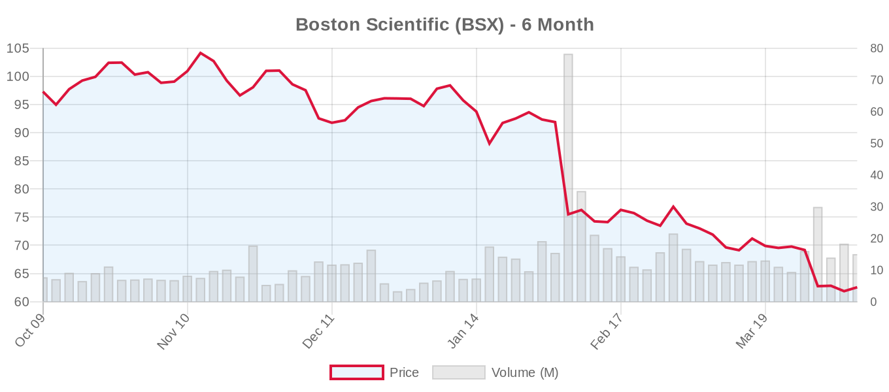
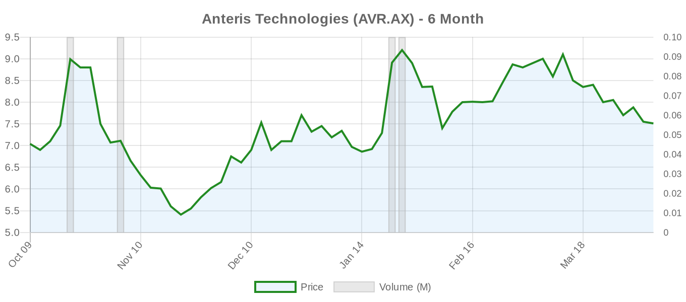

|
||||||||||||||
|
April 09, 2026 By E. Nolan Beckett |
||||||||||||||
|
||||||||||||||
Executive SummaryToday in structural heart: MiRus has begun enrolling patients in its STAR randomized trial of the Siegel transcatheter aortic valve, adding another competitor to an increasingly crowded TAVR marketplace. A new multicenter study comparing intra-annular (Navitor) and supra-annular (Evolut PRO) self-expanding valves finds comparable safety and mortality, with a paravalvular leak advantage for Navitor. Meanwhile, TRiCares received FDA IDE approval to launch a pivotal trial for its transcatheter tricuspid regurgitation device, and a thought-provoking editorial in JACC: Asia asks whether polymeric heart valves could solve TAVR's durability problem. Goldman Sachs nudged its Edwards Lifesciences price target up to $97 ahead of Q1 earnings on April 22. For the clinical audience: today's literature carries a recurring theme — the tension between expanding transcatheter indications and the unfinished business of long-term durability and lifetime valve management. Two Annals of Thoracic Surgery commentaries directly challenge the economic and clinical logic of TAVR expansion into younger patients, while a case series in JACC: Case Reports demonstrates the practical complexities of managing conduction disturbances after transcatheter tricuspid valve replacement. As the ESC 2025 guidelines have lowered the TAVI-preferred age threshold to 70, these conversations are no longer academic — they're shaping real-world treatment decisions right now. Today's Key Findings
Aortic Valve (TAVR/TAVI)Navitor vs. Evolut PRO: Intra-Annular vs. Supra-Annular Self-Expanding ValvesThe FIRE TAVI study, published in Clinical Research in Cardiology, is a retrospective multicenter comparison of 269 Navitor and 272 Evolut PRO implants. The primary composite safety endpoint (death, MI, disabling stroke, life-threatening bleeding, major vascular complications, or dialysis-requiring AKI) was statistically equivalent between devices (adjusted OR 0.97, 95% CI 0.50–1.89). Pacemaker implantation rates were also similar (OR 1.13, 95% CI 0.67–1.90), and mean gradients were comparable (7.0 vs. 6.0 mmHg). The standout finding: Navitor had significantly less moderate-or-greater paravalvular leak (0.8% vs. 3.5%, p=0.032), consistent with its intra-annular sealing design. Mid-term mortality was equivalent (HR 1.04). Editorial note: This is encouraging for the Navitor platform, but the study's retrospective design, lack of randomization, and relatively short follow-up (mean ~1 year) limit strong conclusions. PVL reduction is clinically meaningful — moderate-or-greater PVL has been consistently associated with worse survival — but these numbers must be confirmed in larger, prospective comparisons. The absence of core-lab adjudication for PVL grading is a notable limitation. For context, the LANDMARK trial (referenced in our literature database) previously showed noninferiority of the Myval balloon-expandable valve against both SAPIEN and Evolut series at 1 year, highlighting the competitive intensity in this space. Polymeric Heart Valves: The Next Durability Frontier?An editorial in JACC: Asia by Shirai, Hayashi, and Ishizu asks whether polymeric transcatheter heart valves represent the next era of TAVR durability. While no abstract is available, this question sits at the heart of the field's central tension: as both ACC/AHA 2020 and ESC 2025 guidelines acknowledge, TAVI durability data beyond 10 years remain limited, and lifetime management is a major concern, particularly for patients under 70. Polymeric leaflets — if they can match or exceed biological tissue durability without anticoagulation requirements — would be transformative. But we are early in this story; preclinical and first-in-human data are still maturing, and the history of cardiac biomaterials is littered with promising concepts that failed at scale. Annular Rupture and On-Site SurgeryA commentary in the Journal of Cardiothoracic Surgery by Bains, Zamvar, and Bing revisits the critical safety question of annular rupture during TAVI and the importance of on-site cardiothoracic surgical backup. This is timely: the TRACS trial (n=657, now active but not recruiting) is specifically evaluating TAVI outcomes at centers with versus without on-site cardiac surgery. A parallel Polish randomized trial (NCT07515768, n=404) is preparing to address the same question. Annular rupture, while rare (estimated 0.5–1.5% of cases), carries catastrophic mortality rates of 25–50%. As TAVI moves to lower-risk patients and potentially lower-volume centers, this safety infrastructure question becomes more, not less, important. Anomalous Coronary Anatomy in Valve InterventionsFurukawa et al. report in the Annals of Thoracic Surgery on the risks posed by anomalous left circumflex coronary artery (retro-aortic course) during both surgical and transcatheter valve interventions. As the authors note, this typically benign anatomic variant can cause catastrophic ischemia if unrecognized during TAVR or SAVR. With TAVR expanding to lower-risk populations — where comprehensive pre-procedural CT planning may paradoxically receive less attention — this serves as a valuable reminder that anatomic due diligence cannot be shortcut. Biomarkers in Asymptomatic Severe ASFrom our reference literature, the EARLY TAVR biomarker analysis deserves re-emphasis: higher NT-proBNP and hs-cTnT levels were associated with higher event rates in asymptomatic severe AS, but the relative benefit of early TAVI was consistent regardless of biomarker level — and trended toward greater benefit in those with the lowest biomarker levels. This counterintuitive finding suggests that waiting for biomarker elevation may mean waiting too long, aligning with the ESC 2025 upgrade of early intervention to Class IIa (LOE A) for asymptomatic severe AS in all low-risk patients. Tricuspid Valve (TriClip, TTVR)Left Bundle Branch Area Pacing After TTVR: First Systematic Report[NOTABLE] A case series in JACC: Case Reports describes two pacemaker-naïve patients who developed high-grade AV block within 72 hours of transcatheter tricuspid valve replacement (TTVR) and successfully underwent left bundle branch area pacing (LBBAP). At 30 days, pacing parameters were stable, echocardiography showed ≤mild TR, and there was no evidence of lead-valve interaction or RV dysfunction. Why this matters: Conduction disturbances requiring pacemaker implantation occur in up to 24.7% of TTVR patients — a major limitation of the technology. Conventional RV pacing leads passing through a tricuspid prosthesis raise concerns about valve integrity and durability. LBBAP, by targeting the left bundle branch from the RV septum, avoids lead interaction with tricuspid prosthetic leaflets while providing more physiologic ventricular activation. This is a proof-of-concept with only two patients and 30-day follow-up — far too early for practice recommendations — but it opens an important avenue for managing a frequent TTVR complication. TRiCares Receives FDA IDE for Pivotal Tricuspid TrialTRiCares has gained FDA IDE approval to initiate a pivotal trial for its transcatheter tricuspid regurgitation treatment. Details on the specific device mechanism and trial design are pending, but this adds to a rapidly expanding tricuspid competitive landscape that now includes TriClip (Abbott), EVOQUE (Edwards), VDyne (see TRIVITA trial below), and several others. The ESC 2025 guidelines established transcatheter TV treatment as Class IIa (LOE A) based on TRILUMINATE, Tri.Fr, and TRISCEND II — creating a clear regulatory and reimbursement pathway that is attracting new entrants. Robotic Transjugular TTVRA novel early feasibility study (NCT07516145) at Prince of Wales Hospital in Hong Kong is recruiting 10 patients for robotic-assisted transjugular transcatheter tricuspid valve replacement. This represents the bleeding edge of procedural innovation in the TR space — robotics could theoretically improve precision and reduce operator variability, but at this stage, this is exploratory in the extreme. Surgical vs. Transcatheter ComparisonsLifetime Valve Management and the Economics of TAVR Expansion[NOTABLE] Mainali and Pope publish a commentary in the Annals of Thoracic Surgery directly challenging the economic forces driving TAVR expansion into younger patients. While the full text is not available, the title alone — "Lifetime Valve Management and the Economic Forces Behind TAVR Expansion in Younger Patients" — signals a critique that aligns with growing concern from surgical thought leaders ([critic], Badhwar, Mehaffey, and others) about indication creep outpacing the evidence. The core tension: The ESC 2025 guidelines recommend SAVR for patients under 70 at low surgical risk, precisely because lifetime valve management remains a critical unknown. THV explantation carries 12–17% mortality. Redo-TAVR (TAV-in-TAV) raises concerns about coronary obstruction, patient-prosthesis mismatch, and sinus sequestration. The recent meta-analysis by Khan et al. showing a 20% mortality reduction with TAVR at 5 years in lower-risk patients is provocative — but as the reference editorial "From the Hazards of Death to the Hazards of Indication Creep for TAVR" notes, when intermediate-risk trials are excluded, the mortality difference disappears. Financial incentives (shorter hospital stays, higher procedure volumes, device pricing) may be pulling TAVR toward younger patients faster than the science supports. Acquired von Willebrand Syndrome in High-Shear StatesA commentary in JACC: Asia by Passaniti, Zhan, and Zheng calls for cardio-hematology collaboration in managing acquired von Willebrand syndrome (AvWS) in high-shear states — a condition relevant to both transcatheter and surgical prosthetic valves, as well as VADs and ECMO. AvWS with associated hemolysis affects an underappreciated proportion of patients with prosthetic valves and can complicate management decisions, particularly around anticoagulation and reintervention timing. Device & TechnologyMiRus Begins Enrollment in STAR Randomized Trial[NOTABLE] MiRus has commenced patient enrollment in the STAR randomized trial evaluating its Siegel™ transcatheter aortic valve. As reported by MassDevice and National Today, MiRus is a privately held company entering the competitive TAVR market with a novel valve design. The STAR trial's randomized design is a positive signal — too many new entrants rely on single-arm feasibility studies — though we await details on the comparator arm, primary endpoints, and enrollment targets. The Siegel valve joins a growing cohort of next-generation devices including Anteris DurAVR (now in a 1,650-patient pivotal trial), Abbott's balloon-expandable TAVI system (FIH complete), and the established Edwards SAPIEN and Medtronic Evolut platforms. MassDevice Transcatheter Heart Valves Special ReportMassDevice published a special report on the transcatheter heart valve landscape, providing industry-focused coverage of the competitive dynamics in this rapidly evolving space. BMPR2 and Valve Development (Basic Science)For those tracking the basic science pipeline: Shi et al. in Frontiers in Cell and Developmental Biology demonstrate that BMPR2 gene knockouts in zebrafish produce valve developmental defects through ECM-receptor interaction pathways. Both bmpr2a and bmpr2b cooperatively regulate cardiac contractile function and valve morphogenesis. While translational applications are distant, BMPR2 mutations are well-established in pulmonary arterial hypertension — understanding their role in valve development could eventually inform therapeutic targets for congenital valve disease. Industry & MarketGoldman Sachs raised its price target on Edwards Lifesciences (EW) to $97 from $95, maintaining a Buy rating (MarketScreener). The modest $2 increase reflects continued optimism around Edwards' TAVR franchise and PASCAL TEER platform ahead of Q1 earnings on April 22. EW stock rose 1.08% to $81.71 on the day but still trades roughly 18% below the consensus target of $96.85. The broader structural heart competitive landscape continues to intensify: MiRus launching a randomized TAVR trial, TRiCares gaining FDA IDE for tricuspid, Anteris scaling its DurAVR pivotal study to 1,650 patients, and VDyne preparing a 730-patient TTVR pivotal. Edwards and Medtronic remain the dominant incumbents, but the barriers to entry are lowering as the addressable market grows — particularly in tricuspid, where the ESC 2025 Class IIa recommendation created a reimbursement pathway that didn't exist two years ago. Financial AnalysisEarnings season is approaching fast for the structural heart majors, and the April 16–22 window will be pivotal. Abbott reports first on April 16 (EPS estimate $1.15, revenue $11.00B), followed by Edwards Lifesciences and Boston Scientific on April 22 (EW: EPS $0.73, revenue $1.60B; BSX: EPS $0.79, revenue $5.18B). Medtronic's fiscal year timing pushes its report to May 20. The Goldman Sachs price target increase for Edwards — while modest — is notable for its timing, suggesting the Street expects solid TAVR procedure volume growth despite macroeconomic headwinds. Edwards' forward P/E of 24.67 (vs. trailing 45.14) implies analysts see substantial earnings acceleration, likely driven by TAVR share in Europe (where ESC 2025 guidelines expanding TAVI to ≥70 could be a tailwind), PASCAL TEER growth, and the nascent EVOQUE tricuspid replacement franchise. Boston Scientific remains the Street's highest-conviction name in medtech (strong buy consensus) despite being the worst performer over six months (down 35.69%). The disconnect between analyst enthusiasm and price action likely reflects broader market rotation out of high-multiple growth names rather than structural heart-specific concerns. BSX's WATCHMAN franchise and electrophysiology portfolio drive most of the thesis, but the company's TriClip distribution agreement and broader interventional cardiology presence make it a secondary beneficiary of tricuspid market expansion. Abbott has been hit hard over six months (down 21.58%), dragged by litigation risk and supply chain concerns outside of structural heart. Its TriClip and MitraClip franchises remain strong, and the company's balloon-expandable TAVI FIH completion (NCT07082426) signals Abbott's intent to compete directly in the TAVR market — a significant strategic development that bears watching. Valve Industry Stocks Edwards Lifesciences (EW)
Medtronic (MDT)
Abbott (ABT)
Boston Scientific (BSX)
Anteris Technologies (AVR.AX)
Private Companies of Note: JenaValve Technology (aortic regurgitation TAVR focus), J Valve Technology, and Meril Life Sciences (Myval platform) are privately held. Meril's Myval showed noninferiority to SAPIEN and Evolut in the LANDMARK trial and is expanding its global footprint, particularly in emerging markets. Market Outlook: All five tracked public companies posted gains today, but the six-month picture remains decidedly mixed. Edwards and Anteris are the only names in positive territory over that period, while Boston Scientific's 36% decline underscores the broader market rotation away from growth-oriented medtech. Earnings over the next two weeks (ABT April 16, EW and BSX April 22) will be the most important near-term catalyst for the group. The structural heart fundamentals remain strong — aging populations, expanding transcatheter indications, ESC guideline updates driving new procedure volumes — but macro sentiment and tariff/trade concerns continue to compress valuations below where the Street believes they should be. Clinical Trial UpdatesAortic Valve
Mitral Repair
Mitral Replacement
Tricuspid Repair
Tricuspid Replacement
Other Relevant Trials
Social & Conference HighlightsTCTMD published new slide sets related to transcatheter valve interventions. For trainees and interventionalists seeking visual learning resources, the TCTMD platform remains one of the best curated sources for procedural and didactic content. A local Texas news segment (KXII/TMC Medical Minutes) featured TAVR in its patient education series — a reminder that as these procedures become more common, patient-facing communication and shared decision-making tools must keep pace with the technology. Looking Ahead: Earnings season kicks off next week with Abbott (April 16), followed by Edwards Lifesciences and Boston Scientific on April 22. Watch for TAVR volume commentary, PASCAL/TEER revenue trajectory, and any updates on tricuspid device timelines. In the literature, the ongoing debate between lifetime valve management and TAVR expansion to younger cohorts will remain the central narrative of 2026 — the ESC and ACC/AHA haven't agreed on the answer yet, and neither has the data. — E. Nolan Beckett, The Valve Wire |
||||||||||||||
|
|
||||||||||||||
|
||||||||||||||
|